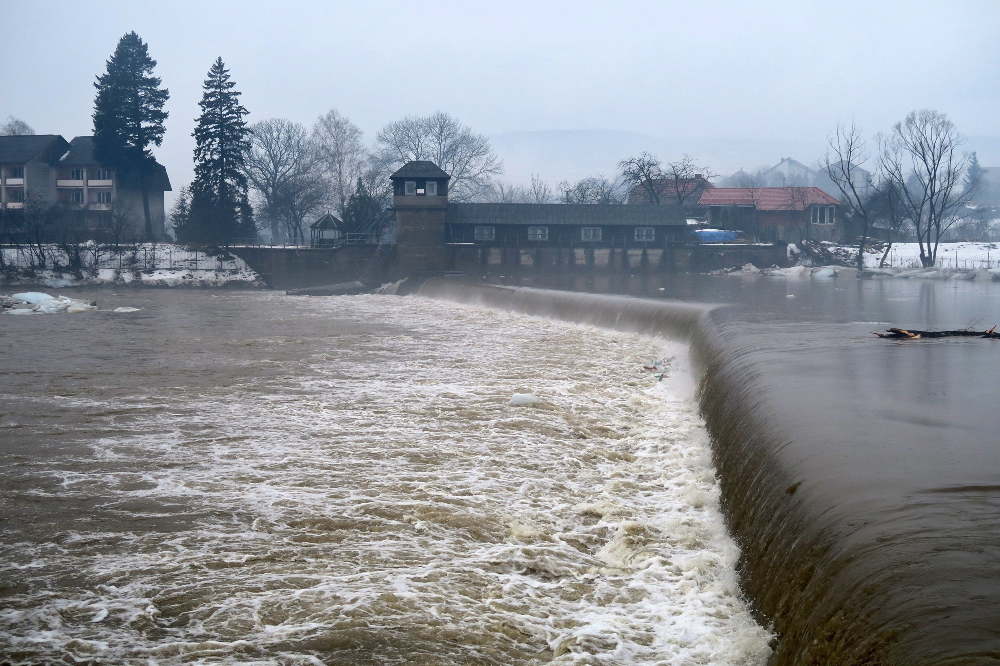

Причины наводнений подразделяются на естественные причины и антропогенные.
Естественные причины наводнений — это гидрологические явления: формирование выдающихся половодий и паводков, затяжные дожди и ливни. Естественными причинами речных наводнений могут быть также особенности зимнего режима некоторых рек, гидродинамическое взаимодействие морей (океанов) и рек в дельтах и устьях, оползни и обвалы в долинах предгорных и горных участков водостоков, вызываемые тектоническими процессами в земной коре.
Наводнения, порождаемые естественными причинами, происходят не только в речных долинах. Они возникают во время сильных ливней в городах, если не обеспечен быстрый естественный или искусственный отвод выпавших осадков с их территории; на равнинной местности с плоским рельефом, если на ней отсутствует или слабо развита речная или искусственная дренажная сеть; в замкнутых котловинах. В определенных топографических условиях причиной наводнений могут быть не только ливни, но и интенсивное снеготаяние, если оно сопровождается дождями.
Антропогенные причины наводнений подразделяются на прямые и косвенные:
- прямые причины - связаны с проведением различных гидротехнических мероприятий и разрушением плотин;
- косвенные - сведение лесов, осушение болот (осушение болот - естественных аккумуляторов стока увеличивает сток до 130 - 160%), промышленная и жилищная застройка, это приводит к изменению гидрологического режима рек за счет увеличения поверхностной составляющей стока.

Из многочисленных видов хозяйственной деятельности человека в речных бассейнах, пожалуй, более всего способствует увеличению высоты и вероятности наводнений сведение лесов. Многочисленными наблюдениями и специальными научными исследованиями установлено, что леса весьма эффективно выполняют роль природных регуляторов и хранителей воды и способствует резкому уменьшению поверхностного стока. Наводнения на реках с сильно залесенными бассейнами, в тех же климатических условиях, обычно бывают меньшими по высоте, чем на реках с такими же по площади, но слабо залесенными или безлесными бассейнами.
Причиной увеличения высоты наводнений может быть неосмотрительная ликвидация ранее созданных в речной системе для регулирования стока плотин. Строительство дорог большой протяженности - когда оно ведется без учета условий стекания поверхностных вод, характера размещения речной сети и особенностей гидрологического режима рек - может способствовать заболачиванию местности и возникновению наводнений.
К неблагоприятным последствиям для человека приводит и хозяйственная деятельность, осуществляемая непосредственно в речных руслах, поймах и долинах: строительство мостов и дорожных насыпей на поймах, застройка пойм, строительство плотин, дамб и т.д. Застраивая не только понижения речных долин, но и поймы, он забывает и недооценивает опасность, которую таят в себе реки в период половодий и паводков. Ведь поймы предназначены природой для пропуска вод половодий и паводков, когда они не вмещаются в речное русло. Строения на пойме могут стеснять проходящий по ней водный поток и способствовать усилению наводнений выше по течению.
Наводнения приводят к разрушениям мостов, дорог, зданий, сооружений, приносят значительный материальный ущерб, а при больших скоростях движения воды (более 4 м/с) и большой высоте подъема воды (более 2 м) вызывают гибель людей и животных.